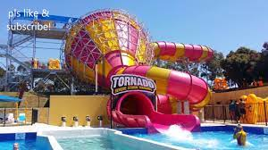
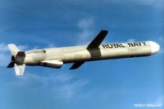
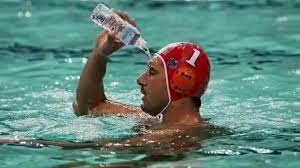

our projects consits of a olpimpic swimming pool full of vodka this progect will be costly but it is posiblle using a bit over 1000000 barrals of low end wisky we can fill a olympic sized swimming pool this will cost around 10000000 dollers this will be then opend as a public swimming pool as well as a the funds to bye a tomawhak cruse missle this will cost aroun 1.5 million dollers this fund will help achive our first goal and our last goal is to make a water parck but the water is vodka the cost of this is unknown
this is the best use of money ever